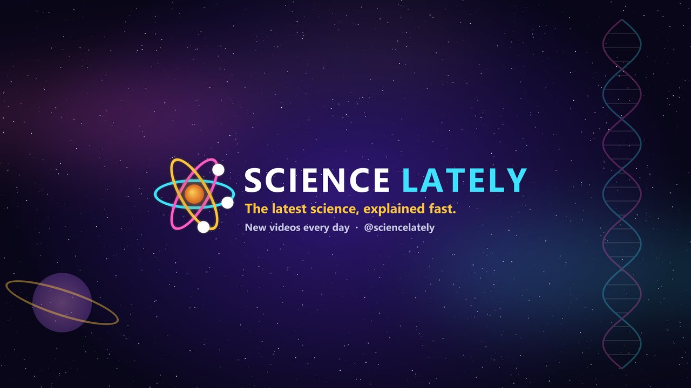

Science Lately
The latest science, explained fast.
Science Lately publishes short videos about new discoveries from space, physics, biology, health, earth science and beyond. Each video is based on a published source — NASA, peer-reviewed and preprint research, and reputable science news — explained in plain language and linked back to the original in the video description.
How our videos are made
Science Lately uses a private, in-house production tool. It gathers recent science news, uses AI assistance to draft a short script from the original source, adds narration with a synthetic voice, and combines it with public-domain or openly licensed images (credited in each description). Every video links to its source.
Finished videos are uploaded to the Science Lately YouTube channel using the YouTube API Services. The tool only uploads to our own channel and does not access any other user's YouTube data.
By using YouTube features, you agree to the YouTube Terms of Service. See our Privacy Policy and the Google Privacy Policy.